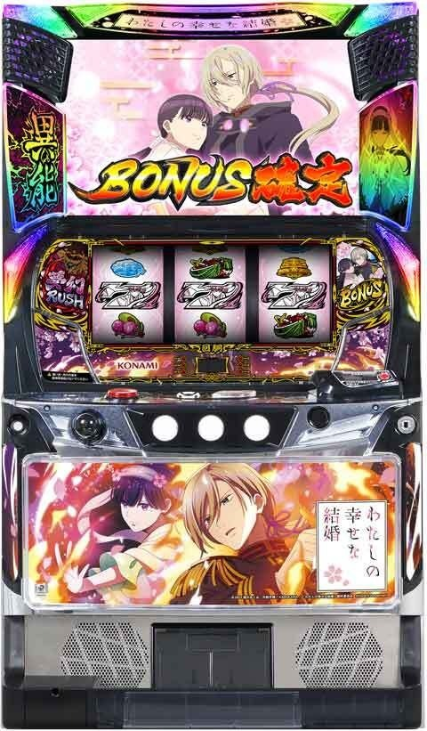
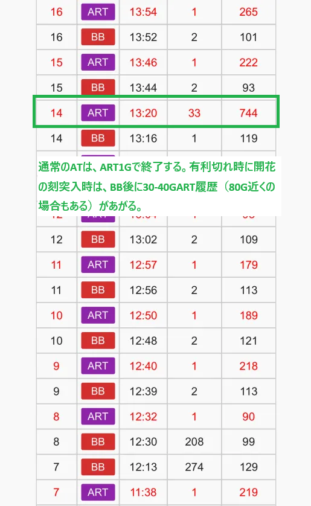
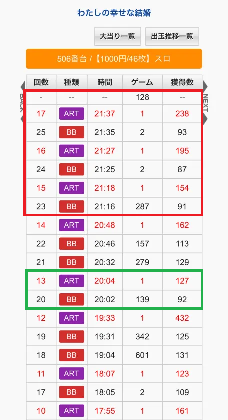
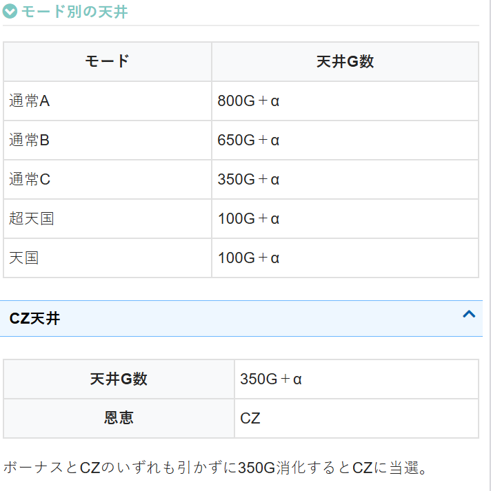
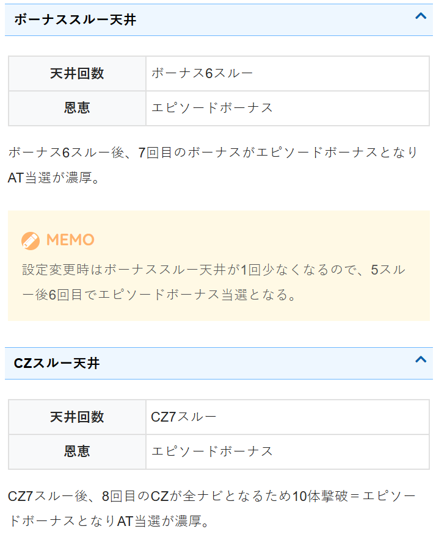
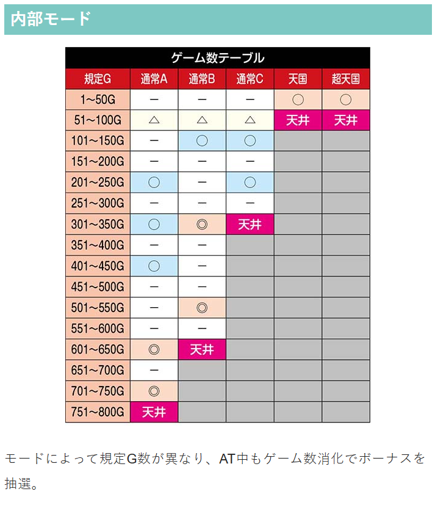
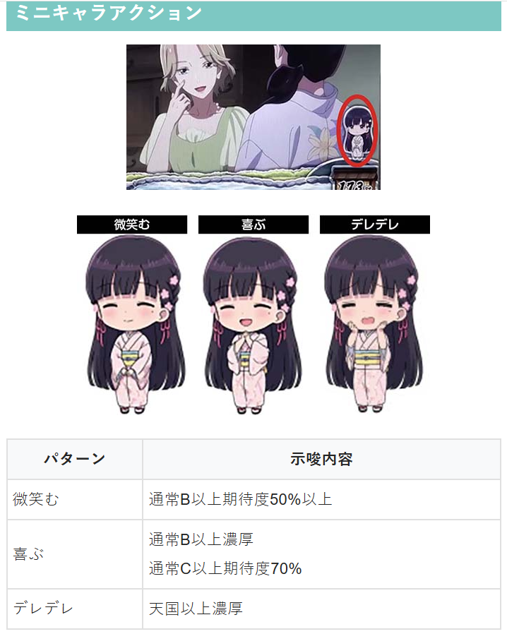
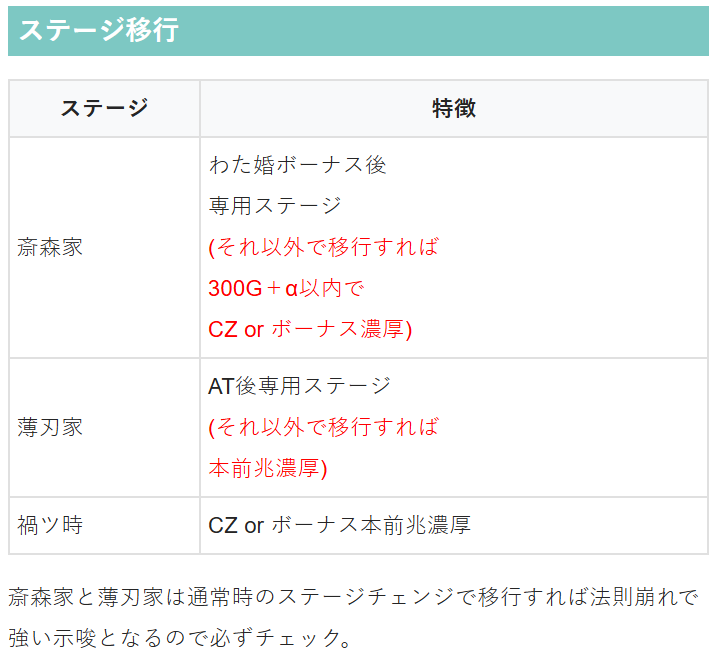
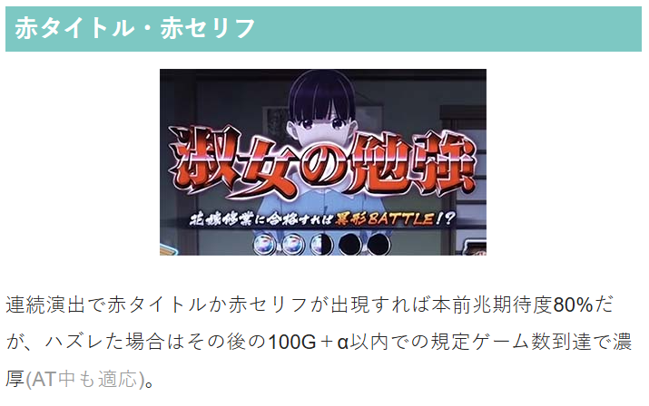
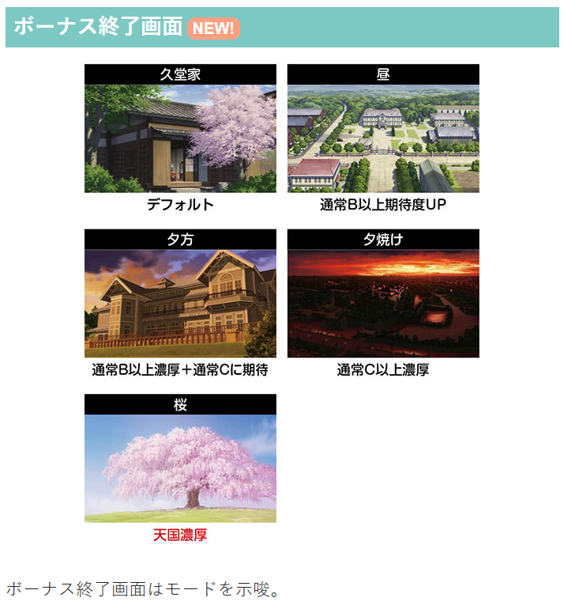

わたしの幸せな結婚

【天井情報】
| ①ボーナス間800G＋αでボーナスに当選 |
| ②ボーナス＋CZ間350GでCZに当選 |
| ③ボーナス6スルー後7回目でエピソードボーナス当選 |
| ④CZ7スルー後8回目でエピソードボーナス当選 |
ボーナス間800G＋α消化でボーナスに当選。途中でATを挟んでもリセットされず、天井ゲーム数はモードで管理。
朝イチリセット(設定変更)時はモードが通常C以上となるので天井は350G＋αとなる。
また、ボーナススルー天井が1回少なくなる(5スルー後6回目でAT濃厚)。
【リセット判別】
コナミのためガックン判別有効？
リセ時の内部G数加算は無し？
【有利区間について】
ゲーム数上乗せタイプなのにシームレスに続く「NOエンディング」ATを搭載!?
開花の刻、覚醒の刻の突入時は、内部的に最低保証で300-350Gはありそう。
有利切れ後でも見た目上、前回の残りＧ数を引き継いでいる様に見せている。
有利区間切断条件
差枚+2100枚前後で有利切れ？有利切れで開花の刻、覚醒の刻に突入
開花の刻突入で差枚関係なく有利切れしてそう
狙い目
※ATに突入してもボーナス間ゲーム数が引き継がれるため、0スルー時のハマリゲーム数は液晶情報から判断。十字キーを押せば液晶ゲーム数を確認出来る。
【リセット狙い】
ボーナス間 140Gから
1スルー以降 250Gから（朝から一度もAT当選していない状況時）
ボーナススルー天井 4スルー200GからAT当選まで 5スルーAT当選まで
【ゲーム数天井狙い】
ボーナス間（0スルー時のボーナス間は液晶ゲーム数で確認）
駆け抜け後（0スルー時）
前回、前々回1スルー以内AT当選 140Gから
前回1スルー以内AT当選 150Gから
それ以外 180Gから
※ミミズモード？絶好調モード？の様な履歴が多くあるため少しボーダーを下げれる感じ？
駆け抜け後以外（0スルー時）不明。1スルーの狙い目に合わせるのが無難？
1スルー以降（駆け抜け、非駆け抜け問わず）
1スルー時 390Gから（慎重派は400ゾーン前兆移行し、抜けた場合はやめ）
※前回、前々回と1スルー以内にAT当選時は慎重派でもボーナス当選まで？
2スルー時 400Gから（400ゾーン前兆移行し、抜けた場合はやめ）
1or2スルー430-450Gくらいで落ちていて、400前兆の有無が不明な場合はボーナス当選までが無難そう
3スルー以降 480Gから
※ボーナス経由のAT突入時は通常C以上濃厚。
CZ間
CZ&ボーナス間 270Gから
※AT中にCZは出て来ないため、通常時350Gハマりが天井になると思われる。
※液晶情報から判断が出来ないため、隣で打っていて確認出来れば打てるかもという程度。
【ボーナススルー天井狙い】
5スルー 250GからAT当選まで
6スルー AT当選まで
【ゾーン狙い】
50-100ゾーン（天国ゾーン）
前回非天国 65Gからまたは狙えない
前回天国 30Gから
前回、前々回天国 0Gから
※実践上、天国当選時は終了画面がほぼ桜、稀に夕暮れ、夕方となっており、終了画面を確認してやめられている台は天国が期待できない可能性あり。
※天国当選時のゲーム数は90-96Gに集中している（0スルーの当選履歴はデータ機と液晶ゲーム数ずれてるため注意）
300ゾーン（300-350ゾーン+CZ間天井確認）
280Gから300-350のゾーンとCZ間天井（350G）をフォローする
目視で途中CZ当選していたら350Gからのフォローは不要。350から5Gくらい回して前兆来なければやめて良さそう。
※350GでのCZ当選時は、原則351Gから前兆が開始し、360-370GくらいでCZ突入と思われる。
【規定ゲーム数前兆の特徴】
規定ゲーム数に到達すると液晶の数値の色が変化。（例 300Gなら301Gで変化）
前兆ステージ（対異特殊部隊）に移行する場合は、下二桁10G前後で夕方ステージ移行→20G前後で前兆ステージ→40-43Gで決着。下二桁01-10Gで強めの煽り演出が来やすい。
前兆ステージに移行しない場合は、下二桁20G前後で夕方ステージ移行→32G前後で液晶の数値が白に戻る傾向。
異形ポイントの到達やレア役からの前兆？が被ると特徴通りに前兆が発生しない可能性あり。
CZの本前兆が被ったケースでは液晶下二桁32Gで液晶の数値が白に戻った。
【異形ポイント狙い】
どの程度CZ当選するか不明。20％くらいCZ当選？
取り敢えず残り100pt以内なら0ptまで？
【有利区間関連狙い】
開花の刻という最強特化ゾーンが強そう。有利切れのタイミングで突入？（その他にも突入契機あり）
差枚+1200枚以上
駆け抜け後0スルー 0Gから（差枚+1000枚以上も0Gから）
駆け抜け後以外
積極派 200Gから
慎重派 260Gから300ゾーン狙いまで
差枚+1600枚以上
駆け抜け後0スルー 0Gから
駆け抜け後以外
積極派 0Gから
慎重派 200Gから300ゾーン狙いまで
【示唆が絡む狙い目】
ミニキャラアクション
喜ぶ 250Gからボーナス当選まで
デレデレ 天国確認
滞在ステージ
齊森家 わた婚ボーナス後専用ステージ それ以外で移行はボーダー下げれそうだが狙い目不明
薄刀家 AT後専用ステージ それ以外で移行は本前兆濃厚
禍ツ時 CZ or ボーナス本前兆濃厚
赤タイトル・赤セリフ
連続演出で赤タイトル、赤セリフで外れた場合はその後100G+α以内での規定ゲーム数到達で当選濃厚（AT中含む）
ボーナステンパイボイス
特殊ボイスなら次回天国以上が濃厚。ボイスの種類は不明。
終了画面について
実践上、天国当選時は8割以上「桜」の画面が出てくる。他は「夕方」「夕暮れ」各1割弱程度。
天国ループ中でも、終了画面が「デフォルト」だと現状天国当選無し。「昼」も現状天国当選無し。
ほぼAT中のサンプルのため、非AT時は異なるかもしれないが天国確認の押し引きは終了画面がメインになるかも？
やめ時
ボーナス後は示唆を見て何も無ければヤメ。
ボーナス終了画面が桜は天国濃厚のため天国確認まで。
AT後は夢屋敷（引き戻し）を確認。
示唆の部分は【示唆が絡む狙い目】を参照。
AT後はボーナス間のゲーム数を引き継ぐので天井等が近くないか必ず確認。
前回天国当選時はループに期待できるので天国確認？（終了画面の示唆で押し引き？）
その他
有利切れ履歴
有利切れをすると開花の刻へ突入？
期待枚数も大きいため差枚狙いが有効そう。
以下履歴は有利切れの信号と思われる。

駆け抜け履歴
緑枠は駆け抜け履歴。赤枠はAT中にボーナスが引けている履歴。
ボーナス経由でAT突入時は通常C以上濃厚のため、駆け抜けた場合はボーダーを大きく下げれる。
ボーナス間ハマリは液晶ゲーム数を確認。








参考元
基本情報
- メーカー: コナミアミューズメント
- 機械割: 97.9% 〜 112.0%
- 導入開始日: 2025年07月07日（月）
- ゲーム性概要: ●幸せになれるパチスロをテーマにアニメ『わたしの幸せな結婚』がスマスロで登場 ●地上波未公開（4/14時点）の特別エピソードを搭載しているのでファン必見！ ●NOエンディングAT「夢幻ラッシュ」でシームレス！ ●上乗せが連鎖するST型上乗せ高確ゾーン「異能暴走」 ●上乗せが進化する特化ゾーン「開花の刻」 ●未来や過去の予告映像で期待が高まる新感覚の「夢見の力」も搭載


打ち方
打ち方・小役
打ち方（小役狙い）
「最初に狙う絵柄」 左リール上段付近にBARを狙う。 スイカ停止時のみ中リールにスイカ狙い、その他の停止形は中＆右リールはフリー打ちでOKだ。

※左リールはいずれかの7狙いでもOK
「スイカ停止時」 中リールにスイカを狙う（白7 or 赤7目安）。右リールは取りこぼしがないのでフリー打ちでOK。

「レア役の停止形」

「左リール白7狙いの特徴」 左リール白7狙いはリール制御が特殊で、スイカが上段までスベればチャンス目の期待大。右上がりリプレイはAT直撃と関係がある!?

解析情報通常時
小役関連
小役確率（左1st時）
| 役 | 確率 |
|---|---|
| リプレイ | 1/7.3 |
| 平行ベル（1枚） | 1/10.4 |
| 斜めベル（9枚） | 1/14.5 |
| 弱チェリー | 1/69.9 |
| スイカ | 1/99.9 |
| チャンス目 | 1/179.6 |
| 強チェリー | 1/496.5 |
| ベル合算 | 1/6.1 |
| レア役合算 | 1/31.4 |
| 小役合算 | 1/3.0 |
モード
モードごとの特徴と天井ゲーム数
| モード | 特徴 | 天井 |
|---|---|---|
| 通常A | 基本となるモード | 800G＋α |
| 通常B | 通常Aよりも早い当たりに期待 | 650G＋α |
| 通常C | 天井が浅い | 350G＋α |
| 天国 | 約50%でループ | 100G＋α |
| 超天国 | 約80%でループ、 転落時は天国へ | 100G＋α |
ボーナス経由のAT突入時は通常C以上濃厚（AT直撃時は通常時のモード・ゲーム数を引き継ぎ）。 天国以上のトータル選択率は約25%で、モード移行率に設定差がないので低設定でも天国ループに期待できる。
モードごとのゾーン表
| ゲーム数 | 通常A | 通常B | 通常C | 天国 | 超天国 |
|---|---|---|---|---|---|
| 1G～50G | ー | ー | ー | 〇 | 〇 |
| 51G～100G | △ | △ | △ | 天井 | 天井 |
| 101G～150G | ー | 〇 | 〇 | ||
| 151G～200G | ー | ー | ー | ||
| 201G～250G | 〇 | ー | 〇 | ||
| 251G～300G | ー | ー | ー | ||
| 301G～350G | 〇 | ◎ | 天井 | ||
| 351G～400G | ー | ー | |||
| 401G～450G | 〇 | ー | |||
| 451G～500G | ー | ー | |||
| 501G～550G | ー | ◎ | |||
| 551G～600G | ー | ー | |||
| 601G～650G | ◎ | 天井 | |||
| 651G～700G | ー | ||||
| 701G～750G | ◎ | ||||
| 751G～800G | 天井 |
設定変更時のモード振り分け
| モード | 振り分け |
|---|---|
| 通常C | 94.9% |
| 天国 | 4.7% |
| 超天国 | 0.4% |
異形ポイント
異形ポイント概要
通常時は毎ゲーム、最低1ptずつ異形ポイントを減算していき、0ptになるとCZを抽選する。 レア役成立時は大量減算のチャンスで、減算抽選が優遇されたポイント増量中へ移行する可能性もある。

異形ポイント性能
| 項目 | 内容 |
|---|---|
| ポイント減算契機 | 毎ゲーム、最低1pt（成立役で減算量変化） |
| 初期ポイント | 999pt |
| 0pt到達時 | CZを抽選 |
| 備考 | 大量減算に期待できるポイント増量中あり |
小役ごとのポイント減算期待度
| 役 | 期待度 |
|---|---|
| ベル・リプレイ | 低 |
| 弱チェリー・スイカ | ↓ |
| チャンス目 | ↓ |
| 強チェリー | 高 |
［ポイント増量中以外］異形ポイント減算振り分け
| ポイント | ハズレ | ベル | リプレイ |
|---|---|---|---|
| 1pt | 98.8% | ー | ー |
| 3pt | 1.2% | 95.3% | ー |
| 5pt | ー | 3.1% | ー |
| 10pt | ー | 1.2% | 98.4% |
| 30pt | ー | 0.4% | 1.2% |
| 50pt | ー | ー | 0.4% |
| 100pt | ー | ー | ー |
| 300pt | ー | ー | ー |
| 500pt | ー | ー | ー |
| 999pt | ー | ー | ー |
| ポイント | 弱チェリー | スイカ | チャンス目 |
| 1pt | ー | ー | ー |
| 3pt | ー | ー | ー |
| 5pt | ー | ー | ー |
| 10pt | ー | ー | ー |
| 30pt | 94.5% | 90.6% | ー |
| 50pt | 3.1% | 5.1% | ー |
| 100pt | 1.2% | 3.1% | 90.6% |
| 300pt | 0.4% | 0.4% | 5.1% |
| 500pt | 0.4% | 0.4% | 3.1% |
| 999pt | 0.4% | 0.4% | 1.2% |
※強チェリーは999pt減算
30pt以上の減算に当選すると、ポイント増量中へ移行する。
［ポイント増量中］異形ポイント減算振り分け
| ポイント | ハズレ | ベル | リプレイ |
|---|---|---|---|
| 1pt | ー | ー | ー |
| 3pt | 100% | ー | ー |
| 5pt | ー | ー | ー |
| 10pt | ー | 99.6% | ー |
| 30pt | ー | 0.4% | 99.6% |
| 50pt | ー | ー | 0.4% |
| 100pt | ー | ー | ー |
| 300pt | ー | ー | ー |
| 500pt | ー | ー | ー |
| 999pt | ー | ー | ー |
| ポイント | 弱チェリー | スイカ | チャンス目 |
| 1pt | ー | ー | ー |
| 3pt | ー | ー | ー |
| 5pt | ー | ー | ー |
| 10pt | ー | ー | ー |
| 30pt | ー | ー | ー |
| 50pt | 97.7% | 95.7% | ー |
| 100pt | 1.2% | 3.1% | ー |
| 300pt | 0.4% | 0.4% | 95.7% |
| 500pt | 0.4% | 0.4% | 3.1% |
| 999pt | 0.4% | 0.4% | 1.2% |
※強チェリーは999pt減算
CZ前兆中の規定ポイント到達
通常時は異形ポイントが0になるとCZを抽選するが、CZ本前兆中に再度異形ポイントを0にした場合はボーナス当選濃厚となる（前兆ゲーム数を無視して即告知）。 ボーナス＆CZ間350G消化によるCZの本前兆中に、異形ポイントが0になった場合もボーナス濃厚だ。

異形バトル（CZ）
異形バトル概要

3GのST型CZで、小役入賞のたびにランクアップ＆STゲーム数を再セット。最終的に上げたランク（異形の撃破数）に応じてボーナスが抽選される。 9体撃破でボーナス・10体撃破でエピソードボーナスが濃厚となる。10体撃破後は次の1Gでレア役を引けば開花の刻（特化ゾーン）突入濃厚だ。
異形バトル性能
| 項目 | 内容 |
|---|---|
| 契機 | 異形ポイント0pt到達時の抽選 |
| 継続ゲーム数 | 3GのST型 |
| 消化中の抽選 | 小役入賞で異形を撃破するほどチャンス、 レア役は撃破＋STのゲーム数減算ストップ |
| ボーナス期待度 | 約40% |
| 9体撃破 | わた婚ボーナス以上 |
| 10体撃破 | エピソードボーナス濃厚 |
| その他 | 10体撃破後の1Gでレア役を引けば開花の刻へ |
「異形撃破（ランクアップ）」 小役入賞で異形を1体以上撃破、押し順ナビ発生時はベルが入賞するので撃破濃厚だ。レア役成立時は異形撃破に加え、一定ゲーム数間減算がストップ。 CZにはナビシナリオがあって、CZスルーごとに上位のシナリオが選択されやすくなる。7スルー後はフルナビ濃厚だ。

「異形探索モード」 撃破数が8体以下で終了したの場合、異形探索モード（前兆）を経由してボーナスの当否を告知。前兆中はレア役で成功への書き換えが抽選される。

前兆
ボーナス前兆中の抽選内容
| 前兆種別 | 内容 |
|---|---|
| フェイク前兆 | 本前兆への書き換え抽選 |
| 本前兆 | エピソードボーナスへの書き換え抽選 （ボーナス確定画面も書き換え抽選は有効） |
直撃抽選
ステップアップフリーズの対応役
| 段階 | 対応役 |
|---|---|
| 1段階 | チェリーorスイカ |
| 2段階 | チャンス目or強チェリー |
| 3段階 | わた婚ボーナスorエピソードボーナス |
| 4段階 | 開花の刻 |
通常時のステップアップフリーズは段階ごとに対応役があり、矛盾すればボーナス当選濃厚。本前兆中の演出として発生しているわけではなく、当該ゲームで引いたレア役での直撃抽選に受かったことを示唆している。
［ステップアップフリーズ］ 4段階目は開花の刻直行！ ※映像は滞在ステージによって異なる

天井
ボーナススルー回数天井の期待度
| 回数 | 期待度 |
|---|---|
| 1スルー | △ |
| 2スルー | △ |
| 3スルー | ◯ |
| 4スルー | ☆ |
| 5スルー | ◯ |
| 6スルー | ◎ |
※設定変更時は最大5スルーに短縮される ※4スルーは高設定ほど選択されやすい
解析情報ボーナス時
わた婚ボーナス
わた婚ボーナス概要
初当りのメインは赤7揃いのわた婚ボーナス。3種類の告知パターンから選択可能で、消化中はレア役などでATを抽選する。

わた婚ボーナス性能
| 項目 | 内容 |
|---|---|
| 契機 | CZ成功、規定ゲーム数到達 |
| 1Gあたりの純増 | 約4.2枚 |
| 継続ゲーム数 | 25G |
| 消化中の抽選 | AT抽選（AT当選後はATゲーム数上乗せ抽選） |
強チェリーが成立すればAT当選濃厚だ。
「告知タイプ選択」 チャンス告知、完全告知、最終告知の3種類。ムービーも3種類から選択できる。

［チャンス告知］ 狙えカットイン発生時にBARが揃えばAT。カットインの色は青＜赤＜虹の順に期待度がアップする。

［完全告知］ 金シャッターが閉まればAT！

［最終告知］ ラストでATの当否を告知！

AT当選率
| 役 | 当選率 | 当選割合 |
|---|---|---|
| 下記以外 | 1.1% | 54.0% |
| 弱チェリー | 21.5% | 14.7% |
| スイカ | 21.5% | 10.3% |
| チャンス目 | 43.0% | 11.4% |
| 強チェリー | 100% | 9.6% |
チャンス告知選択時は、レア役以外で当選した場合は基本的に狙えカットイン→BAR揃いで告知。レア役契機はPUSHボタンで告知されるパターンと狙えカットイン成功で告知されるパターンの2種類がある。
エピソードボーナス
エピソードボーナス概要
白7揃いはエピソードボーナスで、通常時に当選した場合はAT濃厚。AT中のボーナスはエピソードボーナスのみで、消化中のレア役成立はATゲーム数上乗せ濃厚だ。

エピソードボーナス性能
| 項目 | 内容 |
|---|---|
| 契機 | 初当り時の一部、AT中のボーナス当選時 |
| 1Gあたりの純増 | 約4.2枚 |
| 継続ゲーム数 | 25G |
| 消化中の抽選 | レア役成立でATゲーム数上乗せ濃厚 |
小役ごとの上乗せゲーム数期待度
| 役 | 期待度 |
|---|---|
| 弱チェリー・スイカ | 低 |
| チャンス目 | ↓ |
| 強チェリー | 高 |
夢幻ラッシュ（AT）
AT概要
ゲーム数管理型のAT。レア役でのゲーム数上乗せや特化ゾーン・ボーナスを絡めて出玉を増やすゲーム性だ。

夢幻ラッシュ性能
| 項目 | 内容 |
|---|---|
| 契機 | わた婚ボーナス中の抽選、 エピソードボーナス後、通常時の直撃 |
| 1Gあたりの純増 | 約2.2枚 |
| 初期ゲーム数 | 50G |
| 消化中の抽選 | 桜花ポイント、ATゲーム数上乗せ、 特化ゾーン、ボーナス |
「桜花ポイント」 平行ベル入賞で液晶右下に桜花ポイントを獲得していき、MAX（5pt）になると上乗せ抽選＆暴走待機状態へ移行する。 桜花ポイント獲得率は約1/6。平行ベル1回で5ptを獲得できることもある（暴走待機中は5ptの獲得率アップ）。

「ゲーム数消化での抽選」 通常時と同様に、AT中も規定ゲーム数消化によるボーナス抽選あり。 ボーナス契機でATに突入した場合、初回は通常C以上濃厚。AT直撃の場合は通常時のモードや消化ゲーム数が引き継がれる。
夢見の力
AT中に発生する特殊演出。 過去と未来の2パターンがあり、過去はおもに3桁上乗せ後に発生してもう一度3桁上乗せを獲得。未来ならボーナス当選かつ天国移行が濃厚となる。


終了画面でのレア役
AT終了画面でのレア役は上乗せ濃厚。残り5Gでレア役が成立した場合も上乗せ濃厚で、上乗せしなかった場合はストックありが濃厚となる。

AT中の押し順ベル確率
| 役 | 確率 |
|---|---|
| 押し順6択ベル | 1/2.8 |
| 押し順4択ベル | 1/2.7 |
押し順ベルごとの特徴
| 役 | 特徴 |
|---|---|
| 押し順6択ベル | ● 押し順正解→9枚 ● 第1停止正解→第2停止不正解： 1枚（平行ベル） ※1stのみナビ発生orナビなしを抽選で決定 |
| 押し順4択ベル | ● 押し順正解→9枚 ● 第1停止正解→第2停止不正解： 1枚（ハズレ目） ※必ずフルナビが発生 |
※各ベルの押し順の振り分けは均等
AT中の押し順ベルは6択と4択の2種類があり、どちらも押し順正解で9枚を獲得。桜花ポイントを獲得できる平行ベルは、押し順6択ベルが成立かつ、第1停止正解→第2停止不正解の場合にのみ入賞する。
［押し順6択ベル］

［押し順4択ベル］ ベルが揃うラインで6択と4択のどちらが成立していたかを判別可能。 ※押し順4択ベルはフルナビなので、ハズレ目は押し順ナビをミスした場合にのみ停止する。

暴走待機＆異能暴走
暴走待機概要
桜花ポイントMAX時やレア役成立時などに移行する、5Gの異能暴走高確率状態。消化中に桜花ポイントMAXやレア役を引けば、上乗せ＆異能暴走へ突入する。

暴走待機性能
| 項目 | 内容 |
|---|---|
| 契機 | 桜花ポイントMAX時、レア役成立時 |
| 継続ゲーム数 | 5G |
| 消化中の抽選 | 桜花ポイントMAXやレア役成立で異能暴走濃厚 |
| 異能暴走突入確率 | 約1/16 |
異能暴走概要
5GのST型上乗せ特化ゾーン。平行ベル・BAR揃い・レア役成立でATゲーム数を上乗せして、ゲーム数が再セットされる。 BAR揃い時は上乗せに加え、開花の刻突入の可能性あり。異能暴走中にボーナスに当選した場合は次回天国以上濃厚だ。

異能暴走性能
| 項目 | 内容 |
|---|---|
| 契機 | 暴走待機中の抽選 |
| 突入確率 | 約1/90（AT中のトータル） |
| 継続ゲーム数 | 5GのST型 |
| 消化中の抽選 | 平行ベル・BAR揃い・レア役成立で上乗せ |
| 上乗せ確率 | 約1/4.5 |
| その他 | BAR揃い時の一部で開花の刻突入 |
「上乗せ先告知モード」 異能暴走突入画面でCHANCEボタンを押すと、上乗せ先告知モードに変更可能。 液晶上部からエフェクト発生で上乗せ濃厚、エフェクトが大きいほど上乗せゲーム数も多い（小＝上乗せ濃厚、中＝＋30G以上、大〜＋100G以上or開花の刻）。
暴走待機中のボーナス
AT中のボーナスはすべてエピソードボーナスになるが、暴走待機中にボーナスを引いた場合、ボーナス終了後に異能暴走突入濃厚。さらに、天国以上移行も濃厚となる（異能暴走中のボーナスも異能暴走＋次回天国以上）。 ボーナス告知時に暴走待機にいればいいので、規定ゲーム数到達後などの前兆が始まった後にレア役が成立したり桜花ポイントを5pt貯めることができれば、アツい展開に期待できる。

開花の刻・覚醒の刻
開花の刻概要
開花の刻と覚醒の刻は2部構成の上乗せ特化ゾーン。まずは開花の刻で継続ストック獲得を抽選し、終了後に覚醒の刻でATゲーム数を上乗せする。

開花の刻性能
| 項目 | 内容 |
|---|---|
| 契機 | CZ成功時の一部、 異能暴走中のBAR揃いの一部など |
| 継続ゲーム数 | 継続ストックの最低保障は1個、 1個獲得後は覚醒の刻への移行抽選がスタート |
| 消化中の抽選 | 覚醒の刻の継続ストック抽選 |
「継続ストック」 アイコンの色は青＜赤＜金の3種類で、上位のアイコンほど複数ストックに期待できる。

「美世覚醒で覚醒の刻へ」

覚醒の刻概要
開花の刻で獲得したストック分だけ継続するATゲーム数上乗せゾーン。4G間上乗せをおこない、ラスト1Gで継続ジャッジという流れをストックを消費しきるまで続けていく。 継続するほど覚醒レベルが上がっていき、覚醒レベルに応じて最低上乗せゲーム数が1Gずつアップ。継続時の一部で桜乱舞に突入することもある。

覚醒の刻性能
| 項目 | 内容 |
|---|---|
| 契機 | 開花の刻終了後 |
| 継続ゲーム数 | 1セット4G＋1G （ストック後は約50%で継続抽選） |
| 消化中の抽選 | 成立役に応じたATゲーム数上乗せ抽選、 セット継続時の一部で桜乱舞突入 |
| 期待獲得枚数 | 約3590枚 （初当り～AT終了までの期待枚数） |
「覚醒レベル」 レベルは液晶右上に表示。レベル1時は最低＋1G、レベル2なら最低＋2Gのように、レベルが1Gあたりの最低上乗せゲーム数になる。

「桜乱舞」 1Gあたりの上乗せゲーム数が大幅にアップした特殊なセット。

「セット継続」

夢屋敷
夢屋敷概要
AT終了後に移行する3Gの引き戻しゾーン。レア役を引けば引き戻しの大チャンス!?

夢屋敷中の引き戻し期待度
| 役 | 期待度 |
|---|---|
| 下記以外 | 低 |
| 押し順ベル | チャンス |
| レア役 | 引き戻し濃厚 |
モードごとの規定ゲーム数が近い状態で夢屋敷に移行（ATが終了）した場合、ゲーム数が短縮されてエピソードボーナスに当選するケースがある。
演出情報
通常時
ステージ系の法則
| No. | 法則 |
|---|---|
| ① | ● ステージチェンジ経由で 「斎森家」 移行で300G＋α以内にCZorボーナス当選 （ボーナス終了後除く） |
| ② | ● ステージチェンジ経由で 「薄刃家」 移行で 本前兆濃厚 （AT終了後除く） |
| ③ | ● 禍ツ時ステージはCZorボーナス 本前兆濃厚 |
［斎森家］

［薄刃家］

［禍ツ時］

対異特殊部隊
ゲーム数消化を契機に移行するボーナスの前兆ステージ。 枠色が白＜青＜黄＜緑＜赤＜虹と昇格するほど、本前兆期待度がアップする。


ゲーム数表示の色
液晶左下のゲーム数表示の色は黒がデフォルトで、青＜赤＜金（本前兆濃厚）の順に期待度がアップする。


通常時演出法則
| 演出 | 法則 |
|---|---|
| 連続演出の 赤タイトルor赤文字 | ● 期待度約80% ● ハズレでもそこから100G＋α以内での規定ゲーム数到達濃厚（AT中も有効） |
| 帝が出現 | ● 非前兆中は強レア役、前兆中は前兆期待度アップ（AT中は3桁上乗せに期待） |
| 消灯 | ● 1消灯＋ハズレは対異特殊部隊突入濃厚 |
| アイコン系 | ● 期待：CZ前兆示唆 ● 好機：レア役or対異特殊部隊突入or発展のチャンス |
［連続演出赤タイトル］ 連続演出の赤タイトルやセリフの赤文字はハズレでも100G＋α以内にボーナスに当選するので、即ヤメは厳禁。AT→通常時と移行した場合もモードや消化ゲーム数は引き継がれる。

［帝］

［好機アイコン］

※連続演出赤タイトルと帝の画像はAT中のもの
美世ミニキャラ演出の示唆
| パターン | 示唆 |
|---|---|
| 微笑む | 通常B以上期待度50%以上 |
| 喜ぶ | 通常B以上濃厚＆通常C以上期待度約70% |
| デレデレ | 天国以上濃厚 |
［美世のアクション］

小役入賞時の払い出しランプ色での規定ゲーム数示唆
| 規定ゲーム数到達まで | 白 | 紫（※） |
|---|---|---|
| 下記以外 | 約1/200 | ー |
| 129～256G | 約1/40 | ー |
| 128G以内 | 約1/40 | 約1/200 |
※チャンス目は規定ゲーム数不問で紫に点灯
小役入賞時の払い出しランプが白く光れば256G以内のボーナス当選に期待。チャンス目成立時を除き、紫なら128G以内のボーナス濃厚だ。
［払い出しランプ］ 筐体上部のランプが払い出しランプ。リプレイは青・ベルは黄のように小役に対応した色に光るのがデフォルトパターンだ。

ボーナス
ボーナス終了画面の示唆
| 画面 | 示唆 |
|---|---|
| 久堂家 | デフォルト |
| 陸軍屯所 | 通常B以上示唆 |
| 薄刃家 | 通常B以上濃厚かつ通常Cに期待 |
| 夕焼け | 通常C以上濃厚 |
| 桜 | 天国orAT当選濃厚 |
［久堂家］

［陸軍屯所］

［薄刃家］

［夕焼け］

［桜］

白7テンパイ時の特殊ボイス
白7（エピソードボーナス）テンパイ時のボイスが特殊ボイスなら天国以上濃厚だ。

［チャンス告知］演出法則
| 演出 | 期待度 | |
|---|---|---|
| 狙えカットイン | 青 | 9.6% |
| 狙えカットイン | 赤 | 90.0% |
| 狙えカットイン | 虹 | 濃厚 |
| 狙えカットイン | トータル | 18.6% |
| 帯出現 | 36.5% |
［狙えカットイン：虹］

［帯あおり］ あおりが3G継続すると大チャンス。押し順ベル契機であおりが発生するとAT当選濃厚だ。

［完全告知］AT告知パターンの発生割合
| 演出 | 割合 |
|---|---|
| 金シャッター | 69.3% |
| 映像ストップ | 8.2% |
| 下パネル消灯 | 7.5% |
| デカナビ | 5.7% |
| 美世ささやき | 2.4% |
| 蝶が飛び立つ | 2.3% |
| 違和感表示 | 2.3% |
| 違和感SE | 2.3% |
告知パターンの説明
| 演出 | 内容 |
|---|---|
| 金シャッター （発生タイミング） | ● レバーON時：即、0.25秒後、0.5秒後、下パネル消灯後、ATランプ先光り後 ● リール回転開始時：即、0.25秒後、0.5秒後 |
| 映像ストップ | ● ボーナス中ムービーがストップ |
| 下パネル消灯 | ● 下パネルが消灯 |
| デカナビ | ● 大きな押し順ナビが発生 |
| 美世ささやき | ● 美世のささやき声が発生 |
| 蝶が飛び立つ | ● 告知タイプのUIに止まっている蝶が飛ぶ |
| 違和感表示 | ● ボーナス残りゲーム数と総獲得枚数が小さくなる |
| 違和感SE | ● ほら貝の音が聞こえる |
告知のメインは金シャッターで、発生するタイミングは複数箇所あり。その他の違和感系演出も発生した時点でAT濃厚となる。
［最終告知］幸せレベルごとのAT当選期待度
| レベル | 期待度 |
|---|---|
| レベル1 | 4.4% |
| レベル2 | 9.4% |
| レベル3 | 35.3% |
| レベル4 | 90.0% |
| レベル5 | 100% |
［幸せレベル］

夢幻ラッシュ（AT）
上乗せ系・演出法則
| No. | 法則 |
|---|---|
| ① | ● プレミアムエピソード「わたしの幸せな時間」発生で、上乗せしながら隠しエピソードを含む全エピソードを視聴可能 ● 終了後は開花の刻突入の期待大 |
| ② | ● AT残り0GでPUSHボタンが出現すると、大量上乗せが告知される!? |
| ③ | ● 3桁上乗せ後は夢見の力（3桁上乗せを復元）のチャンス |
| ④ | ● 白ナビはチャンス、ピンクナビは大チャンス |
特化ゾーン
異能暴走中・演出法則
| 演出 | 法則 |
|---|---|
| タイトル画面 | ● タイトル画面でチャンスボタンを押すと先バレ告知モードに変更可能 |
| BARを狙え | ● 同一セット内でフェイクのBARを狙えが2回発生することはない（2回目は必ずBARが揃う） ● 中押し中段BAR停止はBAR揃い1確 ● 逆押し赤7下段ビタ押し→4コマスベリ→BAR中段停止で1確 ● BAR右下がりテンパイは2確 |
| ボーナス当選 | ● 異能暴走中のボーナスは次回天国以上濃厚 ● フェイク連続演出中のレア役成立でボーナス本前兆に書き換え濃厚 |